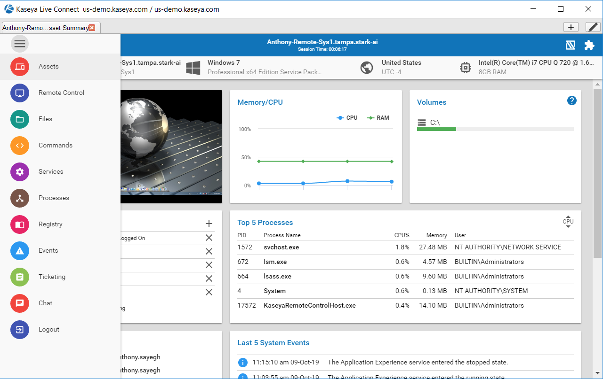
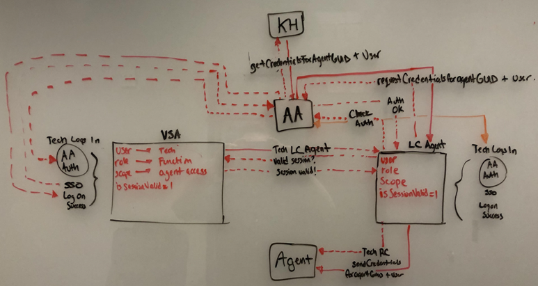
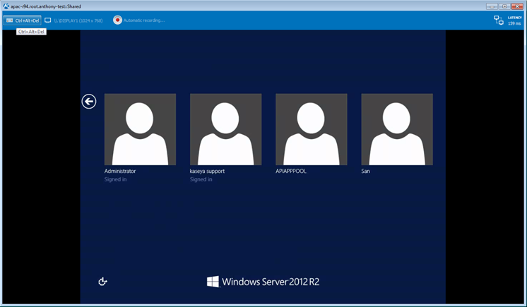
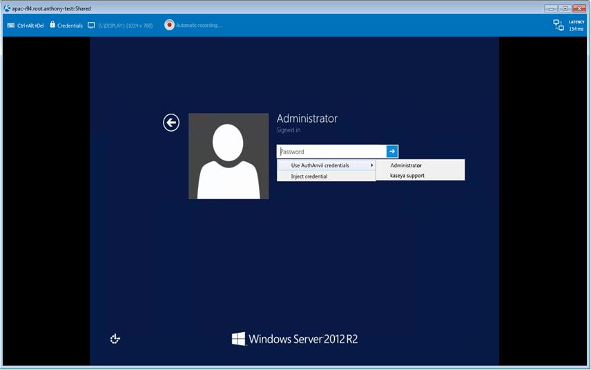
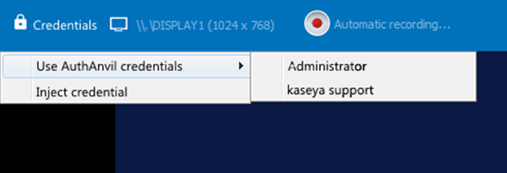

Project: Kaseya Live Connect

Introduction
Kaseya Live Connect is a remote control platform that enables IT engineers to remotely control endpoints, monitor processes, and execute scripts without interrupting users. Live Connect is considered to be one of the core offerings of the VSA (Virtual System Administrator™) platform. The long term business goal was to continue improving Live Connect's features, stability, and integration with other products. As product manager of Live Connect, I discovered a common pain point which was the amount of time it took to login and start working on an endpoint. Below are the steps I took to address this.
Process
- Conducted interviews with a set of workflow questions.
- Documented personas, typical workflows, and baseline metrics.
- Reviewed existing technologies and integrations (such as AuthAnvil).
- Wrote a benefits proposal along with mockups.
- Validated dataflow architecture and technical feasility.
- Prototyped mockup with select customers.
- Presented results to product leadership for approval.
Product Benefits
- Support for manual injection into password fields via shortcuts.
- Support for automatic login and account switching.
- Intelligent enforcement of AuthAnvil credentials
- Credentials are globally managed in a secure Keyhold server
- Live Connect will tap into IT Glue’s password management component
- Efficiency is improved as password and login tasks are automated.
This elevates the value proposition of Live Connect and its integration and results in improved user experience overall.
Diagrams & Mockups




Results
All customers interviewed bought into the feature and say that they would see significant improvement to their workflow and bottom line if this were to be implemented. A typical MSP with 10 IT engineers would see roughly 2.5 hours of daily productivity saved. This feature was defined as an epic, placed in the backlog, and prioritized.